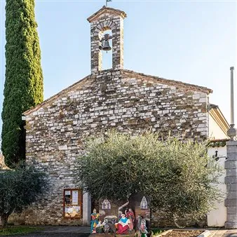

da mar 8 dic a dom 10 gen
La magia del Natale - Rassegna presepi
La rassegna si svilupperà su tutto il territorio comunale, da piazza Capitolo quale centro storico, culturale e religioso di Aquileia per protrarsi lungo le vie e piazze del centro abitato. Esposizione di opere artistiche ideate da privati e associazioni locali, che da diversi…
 Indicazioni
Indicazioni
- Costi e prenotazioni
- Costo non indicato · Prenotazione non indicata
- Programma
- Programma da verificare. Apri la fonte ufficiale per orari e possibili aggiornamenti.
- In caso di maltempo
- Nessuna indicazione specifica pubblicata.
- Note
- Acquisito automaticamente dalla fonte.
L’EVENTO
Descrizione completa
La rassegna si sviluppa nel territorio comunale ed è curata da alcune associazioni locali con la collaborazione di enti e privati cittadini. Sono esposte opere artigianali che saranno visitabili lungo le vie della cittadina, in luoghi pubblici e spazi privati visibili dall'esterno e in luoghi aperti al pubblico, nonché all'interno della Basilica Patriarcale di Santa Maria Assunta, centro storico, culturale e religioso del territorio. L'inaugurazione dei presepi sarà anticipata da altri eventi a tema, tra cui l'arrivo di San Nicolò il 5 dicembre in Piazza Capitolo e la consueta accensione del grande Alberto di Natale all'imbrunire del 6 dicembre, con esibizione di coro gospel.
DOVE
Piazze e vie del centro di Aquileia
Basilica Patriarcale di Santa Maria Assunta
QUANDO
Dall'8 dicembre 2026 al 10 gennaio 2027
Presepi esterni sempre visitabili
Presepi nella Basilica Patriarcale secondo i relativi orari di apertura al pubblico
INGRESSO
Gratuito per i presepi all’aperto
Presepi in Basilica Patriarcale inclusi nel
biglietto di ingresso (info cliccando qui)
VIABILITÀ
Possibilità scarico/carico passeggeri pullman presso Park Terminal, Via Giulia Augusta/Stazione
Possibilità di parcheggio per pullman presso area parcheggio, Via Ugo Pellis
Il centro di Aquileia è facilmente accessibile e percorribile, per ogni informazione turistica è possibile contattare:
Infopoint PromoTurismoFVG
Via Giulia Augusta, 11
Tel. 0431 919491 - 335 7759580
info.aquileia@promoturismo.fvg.it
IL PROGRAMMA
Programma e orari
Appuntamenti raccolti dalle fonti elencate. Dove manca un orario, non è ancora disponibile in questa scheda.
Programma pubblicato
- Dal 2026-12-08 al 2027-01-10
INFORMAZIONI UTILI
Prima di partire
- Controllare la fonte prima di partire.
ORGANIZZAZIONE